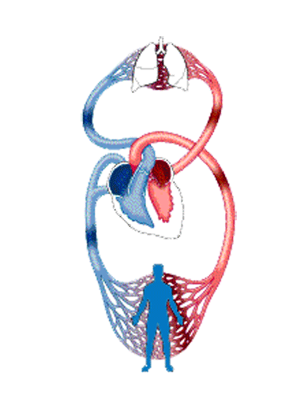

Defination
Hepatology is a branch of medicine concerned with the study, prevention, diagnosis, and management of diseases that affect the liver, gallbladder, biliary tree, and pancreas. The term hepatology is derived from the Greek words “hepatikos” and “logia,” which mean liver and study, respectively.
Conditions treated by hepatologists
Hepatitis affects millions of individuals globally and is associated with several poor outcomes including liver transplant and liver cancer. In particular, hepatitis B and hepatitis C are major causes of liver cancer, while alcohol abuse has been linked to conditions such as cirrhosis and other serious complications.
Over two billion individuals have been infected with hepatitis B at some point and around 350 million people are persistent carriers. With widespread vaccination and blood screening, the incidence of hepatitis B has significantly decreased. However, hepatitis B and hepatitis C are accountable for up to 80% of liver cancer cases.
In addition to these types of hepatitis, the primary conditions encountered by hepatologists deal include viral hepatitis and alcohol-related liver disease.
Some of the most common ailments that are assessed, diagnosed, and managed by a hepatologist include:
-
Diseases of the liver that are related to excess alcohol consumption, including fatty liver disease, liver cirrhosis, and liver cancer.
-
Viral hepatitis infections (hepatitis A, B, C, and E)
-
Drug overdose, particularly paracetamol overdose
Jaundice
-
Gastrointestinal bleeding caused by portal hypertension linked to liver injury
-
Enzyme defects that cause liver enlargement in children, also known as liver storage diseases
-
Some tropical infections such as hydatid cyst, kala-azar, or schistosomiasis
Liver transplantation
-
Liver cancer
-
Genetic and metabolic liver disease
-
Pancreatitis, usually when caused by alcohol consumption or gallstones
-
Drug metabolism
-
Damage to the pancreas or biliary tract caused by infection, cancer, alcohol, bleeding, or obstruction.
The hepatologist
The hepatologist
Hepatology was previously considered to be a subspecialty of gastroenterology; however, nowadays doctors can specialize in hepatology, which is quickly emerging as a freestanding specialty. As a critical organ that can be affected by a large number of factors, the liver is usually the focal point in hepatology.
A hepatologist generally only assesses patients after they are referred by their doctor. A hepatologist may also be involved in the follow-up of patients who have received a liver transplant.
Some of the procedures hepatologists are required to perform include:
Endoscopic retrograde cholangiopancreatography, which is used to diagnose and treat many biliary and pancreatic diseases.
Transhepatic pancreato-cholangiography, which is a form of X-ray imaging that is used to detect any obstructions present in the bile ducts or liver.
Transjugular intrahepatic portosystemic shunt, which is an artificial channel that is made to create a connection between the portal and hepatic veins.
In addition to caring for patients, hepatologists are also involved in active research studies aimed at discovering novel therapeutic approaches to treating and preventing various hepatological diseases.